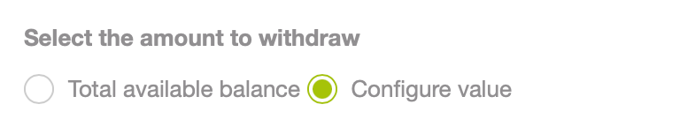
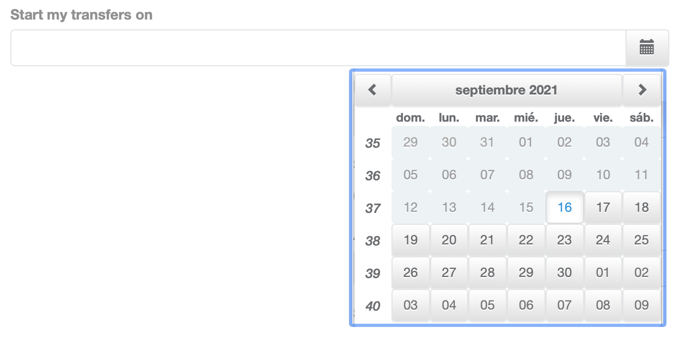

Transfers
In the Transfers module, you can find the options to transfer the funds collected in your virtual PayU account to your main bank account registered.
Considerations
Keep in mind the following considerations before transferring funds to your bank account.
- You must have your bank information updated and validated. Take into account that if you have requested the update of your bank account, the transfers you make are sent to the former bank account until our Risk team have validated it.
- As PayU in Brazil is not a payment institution, the funds collected in your PayU account are transferred to your bank account daily for free. To check the status of these transfers, use the Daily payouts option (Transfers > Daily Transfers).
- The first three local transfers performed during the first month are free. Since the 4th transfer request, PayU charges the following values:
- Colombia: 6.500,00 COP + VAT (Colombia)
- Peru: 10,00 PEN + IGV (Peru),
- Argentina: $ 10,00 ARS+ IVA (Argentina),
- Chile: 0,00 CLP
- Mexico: 0,00 MXN
- The first transfer takes five (5) days to deposit in the bank account. The Risk area of PayU requests a livelihood of sales in the first transfer as an administrative process.
- The second, and the following transfers take maximum three (3) business days.
- The transfers can be programed by Amount and by Date
Note
The times and amounts explained here apply only for local transfer (into the same operation country) for international transfers, contact your sales representative.Permission required
To have access to this module, you need to have a profile with the following permission enabled:
- Transfers > Review
- Transfers > Manage
This permission allows you to perform transfers.
Refer to Profiles and Permissions for more information.
Transfer funds
You can transfer up to the total amount in your PayU account to the registered bank. Follow these steps to perform a transfer.
- Log into your PayU account. In the left menu, expand the Transfers menu and select Transfers.

- Complete the value to transfer or select the Transfer all available balance option. In the right panel, the value entered is updated; furthermore, this panel shows how many free transfers you have until the end of the month.
If you don’t have free transactions, this panel also displayed the value of the transaction along with the taxes.

- Click Request transfer. A confirmation window appears to confirm the amount to be transferred, the value to be debit from your account, and the target account.
Click OK to confirm it or Reject to discard it.

- The result of the operation appears. Take into account the number of days to reflect the money in the target account.

As soon as the request has been successfully sent the transfer is in In progess status and you can see it in the Created transfers report section at the end of the module; also, the amount requested is debited from your balance.
If the transfers could not be processed, this amount backs to your account and no fee is charged for this operation.
Schedule transfers
You can automate the transfers and request the a withdrawal given a fixed amount or each certain time.
Note
 Schedule transfer is not available for Brazil.
Schedule transfer is not available for Brazil.- When scheduling transfers, you must have the enough funds by the time when the transfer is executed.
To schedule a transfer, follow these steps.
- Log into your PayU account. In the left menu, expand the Transfers menu and select Schedule transfer.

- The Schedule Transfers module opens, here you can see all the scheduled transfers you have configured. Click Schedule Transfer to set up a new schedule.

Options
The options column provides the following actions:
- Edit (
 ): allows you to change the configuration of the schedule.
): allows you to change the configuration of the schedule. - Delete (): allows you to deactivate the schedule. Once the schedule is removed, no automatic transfers can be created.
- Select how you want to schedule the transfer.
-
Schedule transfers by periodicity
This option lets you transfer a given amount every certain time (days, weeks, or months). To schedule this type of transfers, select the option Periodicity. -
Schedule transfers by balance available
This option lets you transfer a given amount every time the balance reaches a specific value. To schedule this type of transfers, select the option Balance available.
Provide the following options.
| Option | Description |
|---|---|
| Make a withdrawal each | Select the periodicity of the transfers you want to schedule. This option is available for transfers scheduled by periodicity. |
| Select the amount to withdraw | Select the amount you want to transfer, you can select the total available balance or a fixed value.  |
| Amount to withdraw | Select the amount you want to transfer. This field appears when you select the option Configure value. |
| Start my transfers on | Select the starting date for the schedule. In this date, the first transfer is scheduled.  |
| Description | Provide a meaningful description for your transfer. |
- When finish, click Schedule Transfer.